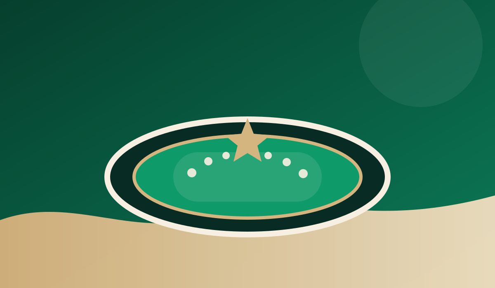

TripCo AR+
64
64
18
46
8
11+
2
TripCo Booking Stack
H
TRIPCO STAY
✈
TRIPCO FLIGHTS
34
2034 HUB
TripCo Journey OS
01 · DISCOVER
02 · PLAN
03 · EXPERIENCE
04 · ORGANIZE
Saudi Destinations
Smart Journey
1
100%
2
Smart
3
64
4
Live
TripCo Planner 4.0
82%
TripCo Live
LIVE
TripCo
Wallet
1
AR+
8
Experience Market
Experience DNA
TripCo AR+
◎
AR+
⌖
GPS
↗
360°
Major Seasons

2034
34
Major
R
Hub